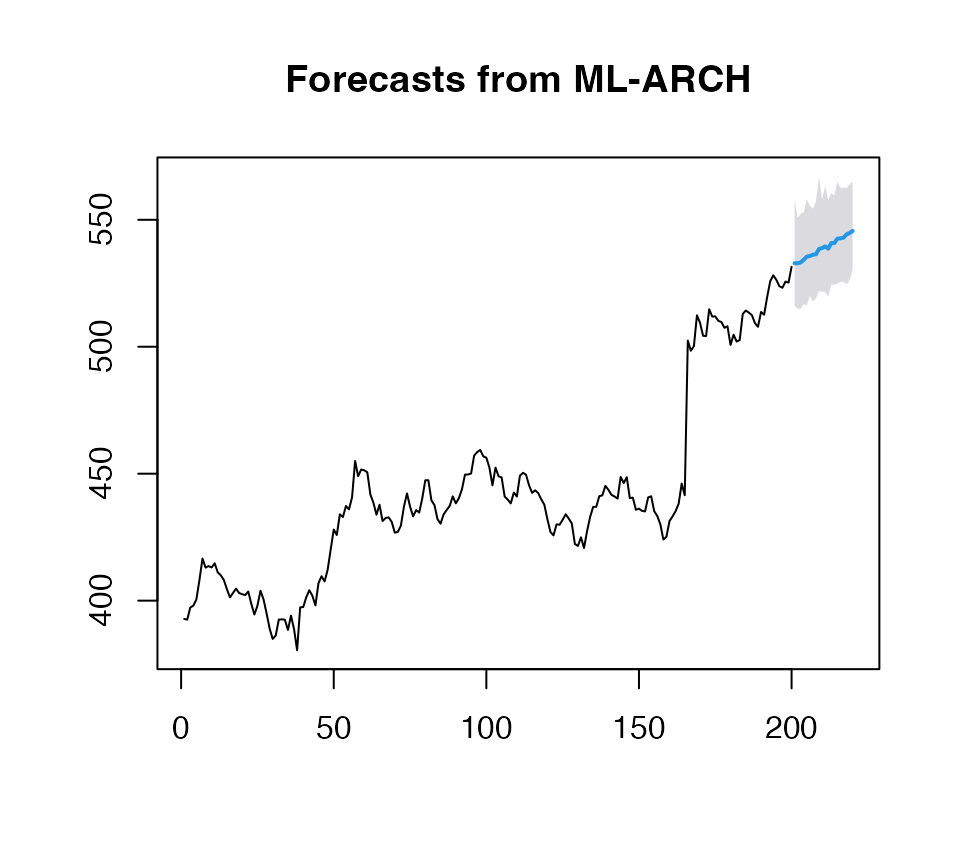

mlarch2.RmdSequel of Beyond GARCH vignette, but using Statistical models for modeling the volatility.
# Default model for volatility (Ridge regression for volatility)
(obj_ridge <- ahead::mlarchf(fpp2::goog200, h=20L, B=500L, ml=FALSE, stat_model=forecast::thetaf))## Point Forecast Lo 95 Hi 95
## 201 532.2388 513.3162 557.2324
## 202 533.2731 514.8458 556.0230
## 203 532.7497 516.1010 553.5397
## 204 533.4229 516.1331 549.2666
## 205 534.9971 515.9919 558.2143
## 206 536.5239 518.2927 557.0108
## 207 535.8667 518.8077 553.2436
## 208 536.8033 519.0069 556.2004
## 209 538.5794 521.1549 559.7448
## 210 539.7062 520.2326 557.7366
## 211 539.7932 522.1684 565.0292
## 212 539.9495 524.5009 558.9572
## 213 540.2779 524.9201 561.1366
## 214 540.6591 519.6144 563.2109
## 215 542.7225 523.9769 566.2946
## 216 542.1858 526.3350 559.4481
## 217 542.9903 524.0671 562.2317
## 218 543.7529 526.1092 567.0145
## 219 544.7682 528.2894 564.2494
## 220 545.1936 523.0811 567.1231
plot(obj_ridge)## Point Forecast Lo 95 Hi 95
## 201 532.8868 516.0088 557.5636
## 202 532.8649 515.0429 550.6035
## 203 533.2314 514.9752 552.4413
## 204 534.2650 516.7278 552.9379
## 205 535.4903 516.1074 558.0681
## 206 535.7498 519.9498 555.5044
## 207 536.2259 517.8389 554.3739
## 208 536.4183 519.0651 557.3277
## 209 538.5145 521.8654 567.0908
## 210 538.8676 521.6935 557.8620
## 211 539.5034 521.5045 563.3154
## 212 538.6145 519.6999 557.7681
## 213 540.8269 524.4448 560.6110
## 214 540.8072 524.4078 559.5899
## 215 542.5512 524.8751 564.9846
## 216 542.6881 525.4620 562.6051
## 217 542.9199 525.6913 562.6519
## 218 544.2442 524.5341 562.5200
## 219 544.8054 526.1739 563.8858
## 220 545.6090 530.4346 565.0507
plot(obj_ridge)
(obj_ridge <- ahead::mlarchf(fpp2::goog200, h=20L, B=500L, ml=FALSE, stat_model=forecast::auto.arima))## Point Forecast Lo 95 Hi 95
## 201 532.3943 513.7523 555.2890
## 202 532.8464 515.3790 552.2520
## 203 533.0725 513.9096 554.6583
## 204 533.9867 516.6196 556.0320
## 205 535.3418 511.5055 557.1765
## 206 536.3740 519.6181 556.3906
## 207 537.1896 517.3734 559.0995
## 208 535.8310 518.6889 554.3139
## 209 538.3246 520.9702 558.2151
## 210 541.6923 519.5902 558.0606
## 211 538.0924 520.6463 556.1780
## 212 539.4503 521.5996 559.2416
## 213 541.9265 522.2296 569.1139
## 214 541.2559 524.0951 563.4862
## 215 542.0215 525.4116 559.3216
## 216 542.2333 524.1127 562.6773
## 217 543.6937 529.1441 561.8603
## 218 544.0948 527.3580 562.7575
## 219 545.3522 525.7563 566.6924
## 220 544.4524 526.4632 562.9378
plot(obj_ridge)## Point Forecast Lo 95 Hi 95
## 201 532.7948 513.8151 555.6541
## 202 534.6027 518.7699 554.7438
## 203 534.2969 518.0542 558.5527
## 204 534.4955 518.1234 556.9810
## 205 536.1053 519.0934 561.2448
## 206 535.7749 517.7376 566.5345
## 207 535.4974 517.9056 550.8826
## 208 537.2912 520.2106 552.6574
## 209 538.9166 520.7329 562.5680
## 210 539.0967 521.1597 561.6189
## 211 540.0343 522.9094 557.5505
## 212 539.1597 520.3017 558.4843
## 213 539.9944 521.8226 562.2385
## 214 541.3032 520.2264 573.0979
## 215 541.8873 527.0043 560.1511
## 216 542.6345 520.8348 562.7457
## 217 543.0836 526.2628 563.8741
## 218 544.5413 523.8726 564.4485
## 219 544.5029 528.8829 565.9260
## 220 545.8648 526.6355 564.5186
plot(obj_ridge)